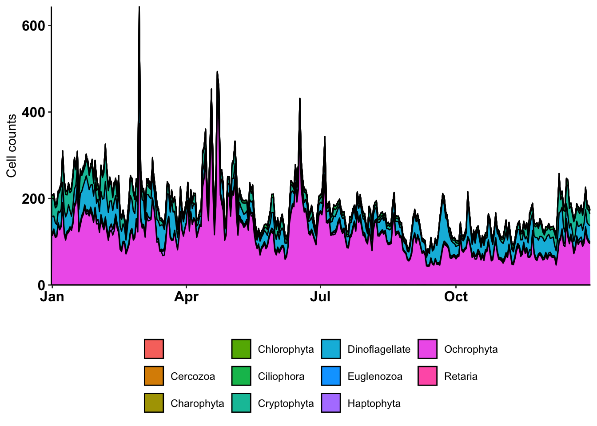

── Attaching core tidyverse packages ──────────────────────── tidyverse 2.0.0 ──
✔ dplyr 1.1.4 ✔ readr 2.1.5
✔ forcats 1.0.0 ✔ stringr 1.5.1
✔ ggplot2 3.5.1 ✔ tibble 3.2.1
✔ lubridate 1.9.3 ✔ tidyr 1.3.1
✔ purrr 1.0.2
── Conflicts ────────────────────────────────────────── tidyverse_conflicts() ──
✖ dplyr::filter() masks stats::filter()
✖ dplyr::lag() masks stats::lag()
ℹ Use the conflicted package (<http://conflicted.r-lib.org/>) to force all conflicts to become errors
Code
library(patchwork)library(svglite)library(scales)
Attaching package: 'scales'
The following object is masked from 'package:purrr':
discard
The following object is masked from 'package:readr':
col_factor
Code
library(treemapify)
2 Preliminary input data
All data from Port Aransas. Counts by hour. Remove data before January 1 2008, as it was newly deployed and has some inconsistencies. Also using lubridate to convert to R-friendly date/time formats.
Subset so dataset includes “2008-01-01” to “2017-08-24”.
Export taxa names for manual curation
Export for manual curation
Code
# tax_export <- counts %>% # pivot_longer(cols = -c(DAY), names_to = "CELL_ID", values_to = "COUNT") %>% #Add in time here when we have it.# select(CELL_ID) %>% distinct()
We need the date/time information from the IFCB outputs to be similar to the metadata for statistical work.
Code
head(counts_long_wtax)
# A tibble: 6 × 16
DAY DATE MONTH HOUR CELL_ID COUNT
<dttm> <date> <dbl> <int> <chr> <dbl>
1 2008-01-01 00:00:00 2008-01-01 1 0 Akashiwo 0.0783
2 2008-01-01 00:00:00 2008-01-01 1 0 Anabaena 0.0783
3 2008-01-01 00:00:00 2008-01-01 1 0 Apedinella 8.24
4 2008-01-01 00:00:00 2008-01-01 1 0 Asterionellopsis 0.0779
5 2008-01-01 00:00:00 2008-01-01 1 0 Beads 5.81
6 2008-01-01 00:00:00 2008-01-01 1 0 Centric 2.82
# ℹ 10 more variables: COURSE_CLASSIFICATION <chr>, TYPE <chr>, Domain <chr>,
# Supergroup <chr>, Phylum <chr>, Class <chr>, Order <chr>, Family <chr>,
# Genus <chr>, Species <chr>
3 Import Gulf metadata
Metadata information compiled by Siddarth Seshampally.
3.1 TABS Buoy D
Import and compile data for TABS Buoy D from “Ocean Data”. Downloaded as individual years.
First isolate downloaded files.
Code
ocean_data_files <-list.files(path ="input-data/TABS_D/", pattern ="Ocean Data ", full.names =TRUE)# Make sure it worksocean_data_files
[1] "input-data/TABS_D//Ocean Data 2009.txt"
[2] "input-data/TABS_D//Ocean Data 2010.txt"
[3] "input-data/TABS_D//Ocean Data 2012.txt"
[4] "input-data/TABS_D//Ocean Data 2013.txt"
[5] "input-data/TABS_D//Ocean Data 2014.txt"
[6] "input-data/TABS_D//Ocean Data 2015.txt"
[7] "input-data/TABS_D//Ocean Data 2016.txt"
[8] "input-data/TABS_D//Ocean Data 2017.txt"
Code
# The full.names = TRUE means that it will output the whole path. This is what we want!
Let’s test out how to import one of these files so we can write an effective function below.
Code
test <-read.table("input-data/TABS_D/Ocean Data 2010.txt", #Use read.table, because columns were separated by either 1 or more spaces. comment.char ="", # Tell R that the "#" in line 1 and 2 needs to be read, instead of ignored.skip =1, #Skip the first line, because there are 2 "headers"header =TRUE# make sure the first column is read in as a column header. )head(test)
# ?read.table# We will want to fix the column headers below, so let's try it. # YY MM DD hh mm DEPTH OTMP COND SAL O2% O2PPM CLCON TURB PH EHtest_headers <- test |>select(YEAR = X.yr,MONTH = mo,DAY = dy,HOUR = hr,MINUTE = mn,DEPTH_m = m,TEMP_degC = degC,COND_mS_cm = mS.cm,SAL_psu = psu,O2_perc = X.,O2_PPM = ppm,Cl_ug_l = ug.l,TURB_FTU = FTU,pH = X..1,EH = mv)## This is where you will want to review the data you collected. And remember R is really basic when it comes to reading in spaces and special characters. So we should make more meaningful column headers.head(test_headers)
#YY MM DD hh mm DEPTH OTMP COND SAL O2% O2PPM CLCON TURB PH EH
#yr mo dy hr mn m degC mS/cm psu % ppm ug/l FTU - mv
2010 01 01 00 00 2.0 14.70 999.00 99.00 999.0 99.00 999.00 99 99.00 99.00
2010 01 01 00 30 2.0 14.70 999.00 99.00 999.0 99.00 999.00 99 99.00 99.00
Columns should be: YY MM DD hh mm DEPTH OTMP COND SAL O2% O2PPM CLCON TURB PH EH
We can test out and build each line of the function using more examples with ocean_data_files[1]
Code
i <- ocean_data_files[1]# i# Isolate each file name, so we can get the year information.strip_name <-unlist(strsplit(i, " "))year <-str_remove(strip_name[3], ".txt")year
[1] "2009"
Write a function to import each file, modify it, and anneal it to itself.
Code
rm(in_data); rm(new_table)
Warning in rm(in_data): object 'in_data' not found
Warning in rm(new_table): object 'new_table' not found
Code
# The i will be our variable in the function. This "for" statement will reach each item in the "ocean_data_files" file list.for (i in ocean_data_files){ in_data <-read.table(i, comment.char ="", skip =1, header =TRUE)# Get year information. strip_name <-unlist(strsplit(i, " ")) year <-str_remove(strip_name[3], ".txt")# Add as a column in_data$YEAR <- year# Write an if else statement to combine all data.if (!exists("new_table")){ new_table <- in_data } else { new_table <-rbind(new_table, in_data) }rm(in_data)}# Check out the new tablehead(new_table)
Fix column headers now. Note that for this data, YEAR was listed twice. We can clean it up now. But it is an example of how to parse file names for dataframe information.
# YMAX <- max(df_classification_all$MEAN_COUNTS)counts_1yr <- counts_long_wtax_wseason %>%# Remove any zeroesfilter(COUNT >0) %>%# Group by Cell ID to get mean for cell ID for a single day.group_by(DAY_NOYEAR, DATE, CELL_ID, SEASON, COURSE_CLASSIFICATION) %>%summarise(PER_DAY_CELL =mean(COUNT)) %>%ungroup() %>%# NOW sum up the different cell types that contribute to the course classification per daygroup_by(DAY_NOYEAR, DATE, SEASON, COURSE_CLASSIFICATION) %>%summarise(PER_DAY_COURSECLASS =sum(PER_DAY_CELL)) %>%ungroup() %>%# Now average by yeargroup_by(DAY_NOYEAR, COURSE_CLASSIFICATION, SEASON) %>%summarise(MEAN_COUNTS_1yr =mean(PER_DAY_COURSECLASS))
`summarise()` has grouped output by 'DAY_NOYEAR', 'DATE', 'CELL_ID', 'SEASON'.
You can override using the `.groups` argument.
`summarise()` has grouped output by 'DAY_NOYEAR', 'DATE', 'SEASON'. You can
override using the `.groups` argument.
`summarise()` has grouped output by 'DAY_NOYEAR', 'COURSE_CLASSIFICATION'. You
can override using the `.groups` argument.
Code
# range(counts_1yr$MEAN_COUNTS_1yr)YMAX <-max(counts_1yr$MEAN_COUNTS_1yr)# YMAXcell_counts_1yr<- counts_1yr %>%ggplot(aes(x = DAY_NOYEAR, y = MEAN_COUNTS_1yr, fill = COURSE_CLASSIFICATION)) +geom_area(position ="stack") +theme_classic() +scale_x_date(date_labels ="%b", expand =c(0,0)) +scale_y_continuous(expand =c(0,0)) +labs(x ="", y ="Cell counts") +theme(legend.position ="bottom", legend.title =element_blank(),axis.text.x =element_text(color ="black", face ="bold", size =12),axis.text.y =element_text(color ="black", face ="bold", size =12)) +geom_rect(xmin =as_date("2024-09-01"), xmax =as_date("2024-11-30"), ymin = (YMAX), ymax = (YMAX+40), alpha =0.2, fill ="#cc5500") +geom_rect(xmin =as_date("2024-03-01"), xmax =as_date("2024-5-31"), ymin = (YMAX), ymax = (YMAX+40), alpha =0.2, fill ="#bccbae") +geom_rect(xmin =as_date("2024-06-01"), xmax =as_date("2024-08-31"), ymin = (YMAX), ymax = (YMAX+40), alpha =0.2, fill ="#ffbf00") +geom_rect(xmin =as_date("2024-12-01"), xmax =as_date("2024-12-31"), ymin = (YMAX), ymax = (YMAX+40), alpha =0.2, fill ="#5d4e62") +geom_rect(xmin =as_date("2024-01-01"), xmax =as_date("2024-02-29"), ymin = (YMAX), ymax = (YMAX+40),, alpha =0.2, fill ="#5d4e62")#Spring = March 1 - May 31 #Summer = June 1 - Aug 31 #Fall = Sept 1 - Nov 30 #Winter = Dec 1 - Feb (March 1 (-1))
Plot 1 year of carbon biomass data
Code
c_1yr <- carbon_long_wtax_wseason |># Remove any zeroesfilter(CARBON >0) %>%# Group by Cell ID to get mean for cell ID for a single day.group_by(DAY_NOYEAR, DATE, CELL_ID, SEASON, COURSE_CLASSIFICATION) %>%summarise(PER_DAY_C =mean(CARBON)) %>%ungroup() %>%# NOW sum up the different cell types that contribute to the course classification per daygroup_by(DAY_NOYEAR, DATE, SEASON, COURSE_CLASSIFICATION) %>%summarise(PER_DAY_COURSECLASS =sum(PER_DAY_C)) %>%ungroup() %>%# Now average by yeargroup_by(DAY_NOYEAR, COURSE_CLASSIFICATION, SEASON) %>%summarise(MEAN_C_1yr =mean(PER_DAY_COURSECLASS))
`summarise()` has grouped output by 'DAY_NOYEAR', 'DATE', 'CELL_ID', 'SEASON'.
You can override using the `.groups` argument.
`summarise()` has grouped output by 'DAY_NOYEAR', 'DATE', 'SEASON'. You can
override using the `.groups` argument.
`summarise()` has grouped output by 'DAY_NOYEAR', 'COURSE_CLASSIFICATION'. You
can override using the `.groups` argument.
Code
carbon_1yr <- c_1yr %>%ggplot(aes(x = DAY_NOYEAR, y = MEAN_C_1yr, fill = COURSE_CLASSIFICATION)) +geom_area(position ="stack") +theme_classic() +scale_x_date(date_labels ="%b", expand =c(0,0)) +scale_y_continuous(expand =c(0,0)) +labs(x ="", y ="Carbon biomass") +theme(legend.position ="bottom", legend.title =element_blank(),axis.text.x =element_text(color ="black", face ="bold", size =12),axis.text.y =element_text(color ="black", face ="bold", size =12))# carbon_1yr
counts_long_wtax_wseason |>filter(COURSE_CLASSIFICATION =="Microeukaryote") %>%filter(Phylum !="Cnidaria") %>%# Remove any zeroesfilter(COUNT >0) %>%# Group by Cell ID to get mean for cell ID for a single day.group_by(DAY_NOYEAR, DATE, CELL_ID, SEASON, Domain, Supergroup, Phylum) %>%summarise(PER_DAY_CELL =mean(COUNT)) %>%ungroup() %>%# NOW sum up the different cell types that contribute to the course classification per daygroup_by(DAY_NOYEAR, DATE, SEASON, Domain, Supergroup, Phylum) %>%summarise(PER_DAY_Phylum =sum(PER_DAY_CELL)) %>%ungroup() %>%# Now average by yeargroup_by(DAY_NOYEAR, Supergroup, Phylum, SEASON) %>%summarise(MEAN_COUNTS_1yr =mean(PER_DAY_Phylum)) %>%ggplot(aes(x = DAY_NOYEAR, y = MEAN_COUNTS_1yr, fill = Phylum)) +geom_area(position ="stack", color ="black") +theme_classic() +scale_x_date(date_labels ="%b", expand =c(0,0)) +scale_y_continuous(expand =c(0,0)) +labs(x ="", y ="Cell counts") +theme(legend.position ="bottom", legend.title =element_blank(),axis.text.x =element_text(color ="black", face ="bold", size =12),axis.text.y =element_text(color ="black", face ="bold", size =12)) +geom_rect(xmin =as_date("2024-09-01"), xmax =as_date("2024-11-30"), ymin = (YMAX +20), ymax = (YMAX +40), alpha =0.2, fill ="#cc5500") +geom_rect(xmin =as_date("2024-03-01"), xmax =as_date("2024-5-31"), ymin = (YMAX +20), ymax = (YMAX +40), alpha =0.2, fill ="#bccbae") +geom_rect(xmin =as_date("2024-06-01"), xmax =as_date("2024-08-31"), ymin = (YMAX +20), ymax = (YMAX +40), alpha =0.2, fill ="#ffbf00") +geom_rect(xmin =as_date("2024-12-01"), xmax =as_date("2024-12-31"), ymin = (YMAX +20), ymax = (YMAX +40), alpha =0.2, fill ="#5d4e62") +geom_rect(xmin =as_date("2024-01-01"), xmax =as_date("2024-02-29"), ymin = (YMAX +20), ymax = (YMAX +40), alpha =0.2, fill ="#5d4e62")
`summarise()` has grouped output by 'DAY_NOYEAR', 'DATE', 'CELL_ID', 'SEASON',
'Domain', 'Supergroup'. You can override using the `.groups` argument.
`summarise()` has grouped output by 'DAY_NOYEAR', 'DATE', 'SEASON', 'Domain',
'Supergroup'. You can override using the `.groups` argument.
`summarise()` has grouped output by 'DAY_NOYEAR', 'Supergroup', 'Phylum'. You
can override using the `.groups` argument.

Code
#Spring = March 1 - May 31 #Summer = June 1 - Aug 31 #Fall = Sept 1 - Nov 30 #Winter = Dec 1 - Feb (March 1 (-1))
Source Code
---title: "ifcb-port aransas"format: html: code-fold: show code-tools: true code-copy: true toc: true toc-location: left number-sections: true number-depth: 2editor: visual---# Set-up```{r, warning=FALSE}# | warning: false# | message: falselibrary(tidyverse)library(patchwork)library(svglite)library(scales)library(treemapify)```# Preliminary input dataAll data from Port Aransas. Counts by hour. Remove data before January 1 2008, as it was newly deployed and has some inconsistencies. Also using lubridate to convert to R-friendly date/time formats.> Go back and ensure carbon units and time zone!```{r}counts <-read.csv("input-data/counts_hourly_Hu.csv") |># Use lubridate package to assign "date" format.mutate(DAY =ymd_hms(X)) %>%mutate(DATE =date(DAY),MONTH =month(DAY),HOUR =hour(DAY)) %>%select(DAY, DATE, MONTH, HOUR, everything(), -X) %>%filter(as_date(DAY) >=as_date("2008-01-01") &as_date(DAY) <=as_date("2017-08-24"))# glimpse(counts)range(counts$DAY)# head(counts)```Carbon biomass by day.```{r}carbon <-read.csv("input-data/carbon_hourly.csv") %>%mutate(DAY =ymd_hms(X)) %>%mutate(DATE =date(DAY),MONTH =month(DAY),HOUR =hour(DAY)) %>%select(DAY, DATE, MONTH, HOUR, everything(), -X) %>%filter(as_date(DAY) >=as_date("2008-01-01") &as_date(DAY) <=as_date("2017-08-24"))# head(carbon)range(carbon$DAY)# glimpse(carbon)```Subset so dataset includes "2008-01-01" to "2017-08-24".### Export taxa names for manual curationExport for manual curation```{r}# tax_export <- counts %>% # pivot_longer(cols = -c(DAY), names_to = "CELL_ID", values_to = "COUNT") %>% #Add in time here when we have it.# select(CELL_ID) %>% distinct()```## Refine input data## Add taxa curated to cell IDs and carbon dataSiddarth contributed to this taxa list.```{r}tax_curated <-read.csv("input-data/tax-list.csv") |>select(CELL_ID:Species) ```Add to cell ID information```{r}counts_long_wtax <- counts %>%pivot_longer(cols =-c(DAY, DATE, MONTH, HOUR), names_to ="CELL_ID", values_to ="COUNT", values_drop_na =TRUE) %>%filter(COUNT >0) %>%left_join(tax_curated)# head(counts_long_wtax)# range(counts_long_wtax$COUNT)```Add to carbon data```{r}carbon_long_wtax <- carbon %>%pivot_longer(cols =-c(DAY, DATE, MONTH, HOUR), names_to ="CELL_ID", values_to ="CARBON", values_drop_na =TRUE) %>%filter(CARBON >0) %>%left_join(tax_curated)# head(carbon_long_wtax)# range(carbon_long_wtax$CARBON)```Types of classifications in dataset.```{r}table(counts_long_wtax$COURSE_CLASSIFICATION)table(counts_long_wtax$TYPE)# glimpse(counts_long_wtax)# table(carbon_long_wtax$COURSE_CLASSIFICATION)```## Save / import data locally```{r}# save(counts_long_wtax, carbon_long_wtax, file = "input-data/compiled_data_input.RData")```Pick up here to work locally.```{r}load("input-data/compiled_data_input.RData", verbose =TRUE)```We need the date/time information from the IFCB outputs to be similar to the metadata for statistical work. ```{r}head(counts_long_wtax)```# Import Gulf metadataMetadata information compiled by Siddarth Seshampally.## TABS Buoy DImport and compile data for TABS Buoy D from "Ocean Data". Downloaded as individual years.First isolate downloaded files.```{r}ocean_data_files <-list.files(path ="input-data/TABS_D/", pattern ="Ocean Data ", full.names =TRUE)# Make sure it worksocean_data_files# The full.names = TRUE means that it will output the whole path. This is what we want!```Let's test out how to import one of these files so we can write an effective function below.```{r}test <-read.table("input-data/TABS_D/Ocean Data 2010.txt", #Use read.table, because columns were separated by either 1 or more spaces. comment.char ="", # Tell R that the "#" in line 1 and 2 needs to be read, instead of ignored.skip =1, #Skip the first line, because there are 2 "headers"header =TRUE# make sure the first column is read in as a column header. )head(test)# ?read.table# We will want to fix the column headers below, so let's try it. # YY MM DD hh mm DEPTH OTMP COND SAL O2% O2PPM CLCON TURB PH EHtest_headers <- test |>select(YEAR = X.yr,MONTH = mo,DAY = dy,HOUR = hr,MINUTE = mn,DEPTH_m = m,TEMP_degC = degC,COND_mS_cm = mS.cm,SAL_psu = psu,O2_perc = X.,O2_PPM = ppm,Cl_ug_l = ug.l,TURB_FTU = FTU,pH = X..1,EH = mv)## This is where you will want to review the data you collected. And remember R is really basic when it comes to reading in spaces and special characters. So we should make more meaningful column headers.head(test_headers)`````` #YY MM DD hh mm DEPTH OTMP COND SAL O2% O2PPM CLCON TURB PH EH#yr mo dy hr mn m degC mS/cm psu % ppm ug/l FTU - mv2010 01 01 00 00 2.0 14.70 999.00 99.00 999.0 99.00 999.00 99 99.00 99.002010 01 01 00 30 2.0 14.70 999.00 99.00 999.0 99.00 999.00 99 99.00 99.00```*Columns should be:* YY MM DD hh mm DEPTH OTMP COND SAL O2% O2PPM CLCON TURB PH EHWe can test out and build each line of the function using more examples with `ocean_data_files[1]````{r}i <- ocean_data_files[1]# i# Isolate each file name, so we can get the year information.strip_name <-unlist(strsplit(i, " "))year <-str_remove(strip_name[3], ".txt")year```Write a function to import each file, modify it, and anneal it to itself.```{r}rm(in_data); rm(new_table)# The i will be our variable in the function. This "for" statement will reach each item in the "ocean_data_files" file list.for (i in ocean_data_files){ in_data <-read.table(i, comment.char ="", skip =1, header =TRUE)# Get year information. strip_name <-unlist(strsplit(i, " ")) year <-str_remove(strip_name[3], ".txt")# Add as a column in_data$YEAR <- year# Write an if else statement to combine all data.if (!exists("new_table")){ new_table <- in_data } else { new_table <-rbind(new_table, in_data) }rm(in_data)}# Check out the new tablehead(new_table)# All years?unique(new_table$YEAR)```Fix column headers now. Note that for this data, YEAR was listed twice. We can clean it up now. But it is an example of how to parse file names for dataframe information.```{r}ocean_data_dfs <- new_table |>select(YEAR =`X.yr`,MONTH = mo,DAY = dy,HOUR = hr,MINUTE = mn,DEPTH_m = m,TEMP_degC = degC,COND_mS_cm =`mS.cm`,SAL_psu = psu,O2_perc =`X.`,O2_PPM = ppm,Cl_ug_l =`ug.l`,TURB_FTU = FTU,pH =`X..1`,EH = mv)colnames(ocean_data_dfs)```## Make plots with ocean data```{r}ocean_data_dfs_long <- ocean_data_dfs |>pivot_longer(cols =-c(YEAR, MONTH, DAY, HOUR, MINUTE), names_to ="VARIABLE", values_to ="VALUE") |>unite(date, YEAR, MONTH, DAY, sep ="-", remove =FALSE) |>unite(month_day, MONTH, DAY, sep ="-", remove =FALSE) |>unite(time, HOUR, MINUTE, sep =":") |># Artificially make a column of dates that have the same year (it needs to be a leap year).mutate(GRAPH_DATE =as.Date(paste("2012", month(date),mday(date), sep ="-")))head(ocean_data_dfs_long)```When data are in long format it is easier to make lots of plots. Use the next two sets of commands to look at the data and variables.```{r}range(ocean_data_dfs$TEMP_degC)# hist(ocean_data_dfs$TURB_FTU)# range(ocean_data_dfs$TURB_FTU)``````{r}unique(ocean_data_dfs_long$VARIABLE)head(ocean_data_dfs_long)```### Temperature by year```{r, fig.height=8, fig.width=15}ocean_data_dfs_long |> filter(VARIABLE == "TEMP_degC") |> filter(VALUE < 99) |> mutate(YEAR = as.character(YEAR)) |> group_by(YEAR, date, GRAPH_DATE) |> summarise(TEMP_MEAN = mean(VALUE), TEMP_MIN = min(VALUE), TEMP_MAX = max(VALUE)) |> ggplot(aes(x = GRAPH_DATE, y = TEMP_MEAN, group = YEAR, color = YEAR)) + scale_x_date(labels = scales::date_format("%m/%d")) + geom_point(shape = 16, size = 2) + geom_errorbar(aes(x = GRAPH_DATE, ymin = TEMP_MIN, ymax = TEMP_MAX)) + scale_color_brewer(palette = "Set2") + theme_classic() + theme( axis.text.x = element_text(angle = 0, face = "bold", color = "black", hjust = 0.5, vjust = 1, size = 24), axis.text.y = element_text(color = "black", face = "bold", size = 24), axis.title = element_text(color = "black", face = "bold", size = 24)) + labs(x = "Date", y = "Temperature °C")```# Import historical data> With with SiddarthFrom TABs curators.```{r}# tabs_d <- read.delim(file = "../../../Downloads/tabs_D_salt.asc", sep = "", header = FALSE, strip.white = TRUE) |> # select(DATE = V1, TIME_UTC = V2, TEMP = V3, CONDUCT = V4, SALT = V5, -V6, -V7)```# IFCB data overviewMake a bar plot of the course classification types available from the IFCB.```{r, fig.height=4, fig.width=6}counts_long_wtax |> group_by(COURSE_CLASSIFICATION, TYPE) |> summarise(COUNT = n()) |> ggplot(aes(area = COUNT, fill = COURSE_CLASSIFICATION)) + geom_treemap(color = "white") + facet_grid(rows = vars(TYPE)) + theme_classic()```Repeat with only microeukaryotes```{r, fig.height=4, fig.width=6}counts_long_wtax |> filter(COURSE_CLASSIFICATION == "Microeukaryote") |> group_by(Supergroup, Phylum) |> summarise(SUM = sum(COUNT), COUNT = n()) |> ggplot(aes(x = Supergroup, y = SUM, fill = Phylum)) + geom_bar(stat = "identity", color = "black") + coord_flip() + theme_classic() + labs(y = "Sum of cell counts", x = "Supergroup")```## Groups by carbon biomass```{r, fig.height=4, fig.width=6}carbon_long_wtax |> filter(COURSE_CLASSIFICATION == "Microeukaryote") |> group_by(Supergroup, Phylum) |> summarise(SUM = sum(CARBON)) |> ggplot(aes(x = Supergroup, y = SUM, fill = Phylum)) + geom_bar(stat = "identity", color = "black") + coord_flip() + theme_classic() + labs(y = "Sum of carbon biomass", x = "Supergroup")``````{r}# counts_long_wtax %>% # select(COURSE_CLASSIFICATION, TYPE, Domain, Supergroup, Phylum) %>% # distinct()# unique(counts_long_wtax$COURSE_CLASSIFICATION)```### Breakdown Alveolata```{r}head(counts_long_wtax)``````{r, fig.height=5, fig.width=6}counts_long_wtax |> filter(Supergroup == "Alveolata") |> group_by(Phylum, Class, Order) |> summarise(SUM = sum(COUNT), COUNT = n()) |> ggplot(aes(area = SUM, fill = Class, subgroup = Order, label = Order)) + geom_treemap(color = "white") + geom_treemap_subgroup_border(color = "grey") + geom_treemap_text(place = "centre",size = 12) + theme_classic() + labs(title = "Most abundant Alveolata")``````{r, fig.height=5, fig.width=6}carbon_long_wtax |> filter(Supergroup == "Alveolata") |> group_by(Phylum, Class, Order) |> summarise(SUM_CARBON = sum(CARBON)) |> ggplot(aes(area = SUM_CARBON, fill = Class, subgroup = Order, label = Order)) + geom_treemap(color = "white") + geom_treemap_subgroup_border(color = "grey") + geom_treemap_text(place = "centre",size = 12) + theme_classic() + labs("Alveolata by carbon")```### Breakdown Stramenopiles```{r}head(counts_long_wtax)``````{r, fig.height=5, fig.width=6}counts_long_wtax |> filter(Supergroup == "Stramenopiles") |> group_by(Phylum, Class, Order) |> summarise(SUM = sum(COUNT), COUNT = n()) |> ggplot(aes(area = SUM, fill = Class, subgroup = Order, label = Order)) + geom_treemap(color = "white") + geom_treemap_subgroup_border(color = "grey") + geom_treemap_text(place = "centre",size = 12) + theme_classic() + labs(title = "Most abundant Stramenopiles")``````{r, fig.height=5, fig.width=6}carbon_long_wtax |> filter(Supergroup == "Stramenopiles") |> group_by(Phylum, Class, Order) |> summarise(SUM_CARBON = sum(CARBON)) |> ggplot(aes(area = SUM_CARBON, fill = Class, subgroup = Order, label = Order)) + geom_treemap(color = "white") + geom_treemap_subgroup_border(color = "grey") + geom_treemap_text(place = "centre",size = 12) + theme_classic() + labs(title = "Stramenopiles by carbon")```## Add seasons# Make data frames to assign seasonSpring = March 1 - May 31 Summer = June 1 - Aug 31 Fall = Sept 1 - Nov 30 Winter = Dec 1 - Feb (March 1 (-1))Make a new dataframe to just add seasons (manually) to the date. I'm subsetting to 2024 to include leap day years. ```{r}df_season <- counts %>%pivot_longer(cols =-c(DAY, DATE, MONTH, HOUR), names_to ="CELL_ID", values_to ="COUNT") %>%mutate(DATA_GAP =case_when(is.na(COUNT) ~"Missing",TRUE~"Not missing" )) |>mutate(date_tmp =as.Date(format(DAY, '2024-%m-%d')), SEASON =case_when(between(date_tmp, ymd('2024-03-01'), ymd('2024-05-31')) ~"Spring",between(date_tmp, ymd('2024-06-01'), ymd('2024-08-31')) ~"Summer", between(date_tmp, ymd('2024-09-01'), ymd('2024-11-30')) ~"Fall", TRUE~"Winter")) %>%# Winter needs to be "else" because you can't select between.select(DAY, date_tmp, SEASON, DATA_GAP) |>distinct() |>mutate(YEAR =year(DAY),MONTH =month(DAY),DATE =day(DAY),HOUR =hour(DAY)) |>group_by(SEASON) |>mutate(month_start_tmp =case_when( SEASON =="Winter"~max(MONTH),TRUE~min(MONTH)),year_start_tmp =case_when(SEASON =="Winter"~ YEAR -1,TRUE~ YEAR), ) |>mutate(month_end_tmp =case_when( SEASON =="Winter"~2,TRUE~max(MONTH))) |>group_by(SEASON, MONTH) |>mutate(day_start_tmp =min(day(DAY)),day_end_tmp =case_when( (SEASON =="Winter"&leap_year(YEAR) ==TRUE) ~29, (SEASON =="Winter"&leap_year(YEAR) ==FALSE) ~28, (SEASON =="Summer"| SEASON =="Spring") ~31, SEASON =="Fall"~30 )) |>ungroup() |>unite("start", year_start_tmp, month_start_tmp, day_start_tmp, sep ="-", remove =FALSE) |>unite("end", YEAR, month_end_tmp, day_end_tmp, sep ="-", remove =FALSE) |>mutate(START =ymd(start),END =ymd(end),START_noy =mdy(paste(month(START), day(START), "2024", sep ="-")),END_noy =mdy(paste(month(END), day(END), "2024", sep ="-"))) |>select(DAY, DATE, MONTH, YEAR, HOUR, SEASON, START, END, START_noy, END_noy) |>distinct()# head(df_season)# View(df_season |> select(SEASON, START, END) |> distinct())df_oneyear <- df_season |>mutate(DATE =mdy(paste(month(DAY), day(DAY), "2024", sep ="-"))) |>select(SEASON, START_noy, END_noy, DATE) |># filter(!(SEASON == "Winter" & (month(START_noy) == 12))) |> distinct()# head(df_oneyear)```Test seasonal plot```{r, fig.height=4, fig.width=6}# Plot multiple yearsggplot(df_season, aes(x = as_date(DAY))) + geom_rect(data = (filter(df_season, SEASON == "Fall")), alpha = 0.2, fill = "#cc5500", aes(xmin = START, xmax = END, ymin = 0, ymax = 10000)) + geom_rect(data = (filter(df_season, SEASON == "Spring")), alpha = 0.2, fill = "#bccbae", aes(xmin = START, xmax = END, ymin = 0, ymax = 10000)) + geom_rect(data = (filter(df_season, SEASON == "Summer")), alpha = 0.2, fill = "#ffbf00", aes(xmin = START, xmax = END, ymin = 0, ymax = 10000)) + geom_rect(data = (filter(df_season, SEASON == "Winter")), alpha = 0.2, fill = "#5d4e62", aes(xmin = START, xmax = END, ymin = 0, ymax = 10000))# Plot one yearggplot(df_oneyear, aes(x = as_date(DATE))) + geom_rect(data = (filter(df_oneyear, SEASON == "Fall")), alpha = 0.2, fill = "#cc5500", aes(xmin = START_noy, xmax = END_noy, ymin = 0, ymax = 10000)) + geom_rect(data = (filter(df_oneyear, SEASON == "Spring")), alpha = 0.2, fill = "#bccbae", aes(xmin = START_noy, xmax = END_noy, ymin = 0, ymax = 10000)) + geom_rect(data = (filter(df_oneyear, SEASON == "Summer")), alpha = 0.2, fill = "#ffbf00", aes(xmin = START_noy, xmax = END_noy, ymin = 0, ymax = 10000)) + geom_rect(data = (filter(df_oneyear, SEASON == "Winter")), alpha = 0.2, fill = "#5d4e62", aes(xmin = as_date("2024-01-01"), xmax = END_noy, ymin = 0, ymax = 10000)) + geom_rect(data = (filter(df_oneyear, SEASON == "Winter")), alpha = 0.2, fill = "#5d4e62", aes(xmin = START_noy, xmax = as_date("2024-12-31"), ymin = 0, ymax = 10000))```Combine with existing data frame.```{r}# str(counts_long_wtax)# str(df_season)counts_long_wtax_wseason <- counts_long_wtax %>%left_join(df_season %>%select(DAY, SEASON, START, END)) %>%mutate(day_noyear =paste(MONTH, day(DAY), "2024", sep ="-")) |>mutate(DAY_NOYEAR =mdy(day_noyear)) |>select(-day_noyear)# head(counts_long_wtax_wseason)carbon_long_wtax_wseason <- carbon_long_wtax %>%left_join(df_season %>%select(DAY, SEASON, START, END)) %>%mutate(day_noyear =paste(MONTH, day(DAY), "2024", sep ="-")) |>mutate(DAY_NOYEAR =mdy(day_noyear)) |>select(-day_noyear)``````{r}# save(carbon_long_wtax_wseason, counts_long_wtax_wseason, df_oneyear, df_season, file = "input-data/data_annotated_wtax_wseason.RData")```# Plot a year of data```{r}load(file ="input-data/data_annotated_wtax_wseason.RData", verbose =TRUE)``````{r}# head(counts_long_wtax_wseason)# range(counts_long_wtax_wseason$DAY)```### Plot 1 year of cell count data```{r}# YMAX <- max(df_classification_all$MEAN_COUNTS)counts_1yr <- counts_long_wtax_wseason %>%# Remove any zeroesfilter(COUNT >0) %>%# Group by Cell ID to get mean for cell ID for a single day.group_by(DAY_NOYEAR, DATE, CELL_ID, SEASON, COURSE_CLASSIFICATION) %>%summarise(PER_DAY_CELL =mean(COUNT)) %>%ungroup() %>%# NOW sum up the different cell types that contribute to the course classification per daygroup_by(DAY_NOYEAR, DATE, SEASON, COURSE_CLASSIFICATION) %>%summarise(PER_DAY_COURSECLASS =sum(PER_DAY_CELL)) %>%ungroup() %>%# Now average by yeargroup_by(DAY_NOYEAR, COURSE_CLASSIFICATION, SEASON) %>%summarise(MEAN_COUNTS_1yr =mean(PER_DAY_COURSECLASS)) # range(counts_1yr$MEAN_COUNTS_1yr)YMAX <-max(counts_1yr$MEAN_COUNTS_1yr)# YMAXcell_counts_1yr<- counts_1yr %>%ggplot(aes(x = DAY_NOYEAR, y = MEAN_COUNTS_1yr, fill = COURSE_CLASSIFICATION)) +geom_area(position ="stack") +theme_classic() +scale_x_date(date_labels ="%b", expand =c(0,0)) +scale_y_continuous(expand =c(0,0)) +labs(x ="", y ="Cell counts") +theme(legend.position ="bottom", legend.title =element_blank(),axis.text.x =element_text(color ="black", face ="bold", size =12),axis.text.y =element_text(color ="black", face ="bold", size =12)) +geom_rect(xmin =as_date("2024-09-01"), xmax =as_date("2024-11-30"), ymin = (YMAX), ymax = (YMAX+40), alpha =0.2, fill ="#cc5500") +geom_rect(xmin =as_date("2024-03-01"), xmax =as_date("2024-5-31"), ymin = (YMAX), ymax = (YMAX+40), alpha =0.2, fill ="#bccbae") +geom_rect(xmin =as_date("2024-06-01"), xmax =as_date("2024-08-31"), ymin = (YMAX), ymax = (YMAX+40), alpha =0.2, fill ="#ffbf00") +geom_rect(xmin =as_date("2024-12-01"), xmax =as_date("2024-12-31"), ymin = (YMAX), ymax = (YMAX+40), alpha =0.2, fill ="#5d4e62") +geom_rect(xmin =as_date("2024-01-01"), xmax =as_date("2024-02-29"), ymin = (YMAX), ymax = (YMAX+40),, alpha =0.2, fill ="#5d4e62")#Spring = March 1 - May 31 #Summer = June 1 - Aug 31 #Fall = Sept 1 - Nov 30 #Winter = Dec 1 - Feb (March 1 (-1))```### Plot 1 year of carbon biomass data```{r}c_1yr <- carbon_long_wtax_wseason |># Remove any zeroesfilter(CARBON >0) %>%# Group by Cell ID to get mean for cell ID for a single day.group_by(DAY_NOYEAR, DATE, CELL_ID, SEASON, COURSE_CLASSIFICATION) %>%summarise(PER_DAY_C =mean(CARBON)) %>%ungroup() %>%# NOW sum up the different cell types that contribute to the course classification per daygroup_by(DAY_NOYEAR, DATE, SEASON, COURSE_CLASSIFICATION) %>%summarise(PER_DAY_COURSECLASS =sum(PER_DAY_C)) %>%ungroup() %>%# Now average by yeargroup_by(DAY_NOYEAR, COURSE_CLASSIFICATION, SEASON) %>%summarise(MEAN_C_1yr =mean(PER_DAY_COURSECLASS)) carbon_1yr <- c_1yr %>%ggplot(aes(x = DAY_NOYEAR, y = MEAN_C_1yr, fill = COURSE_CLASSIFICATION)) +geom_area(position ="stack") +theme_classic() +scale_x_date(date_labels ="%b", expand =c(0,0)) +scale_y_continuous(expand =c(0,0)) +labs(x ="", y ="Carbon biomass") +theme(legend.position ="bottom", legend.title =element_blank(),axis.text.x =element_text(color ="black", face ="bold", size =12),axis.text.y =element_text(color ="black", face ="bold", size =12))# carbon_1yr``````{r, fig.height=7, fig.width=7}(cell_counts_1yr + theme(legend.position = "none")) + carbon_1yr + patchwork::plot_layout(nrow = 2)```## Plot Microeuks only```{r}# counts_long_wtax_wseason``````{r}counts_long_wtax_wseason |>filter(COURSE_CLASSIFICATION =="Microeukaryote") %>%filter(Phylum !="Cnidaria") %>%# Remove any zeroesfilter(COUNT >0) %>%# Group by Cell ID to get mean for cell ID for a single day.group_by(DAY_NOYEAR, DATE, CELL_ID, SEASON, Domain, Supergroup, Phylum) %>%summarise(PER_DAY_CELL =mean(COUNT)) %>%ungroup() %>%# NOW sum up the different cell types that contribute to the course classification per daygroup_by(DAY_NOYEAR, DATE, SEASON, Domain, Supergroup, Phylum) %>%summarise(PER_DAY_Phylum =sum(PER_DAY_CELL)) %>%ungroup() %>%# Now average by yeargroup_by(DAY_NOYEAR, Supergroup, Phylum, SEASON) %>%summarise(MEAN_COUNTS_1yr =mean(PER_DAY_Phylum)) %>%ggplot(aes(x = DAY_NOYEAR, y = MEAN_COUNTS_1yr, fill = Phylum)) +geom_area(position ="stack", color ="black") +theme_classic() +scale_x_date(date_labels ="%b", expand =c(0,0)) +scale_y_continuous(expand =c(0,0)) +labs(x ="", y ="Cell counts") +theme(legend.position ="bottom", legend.title =element_blank(),axis.text.x =element_text(color ="black", face ="bold", size =12),axis.text.y =element_text(color ="black", face ="bold", size =12)) +geom_rect(xmin =as_date("2024-09-01"), xmax =as_date("2024-11-30"), ymin = (YMAX +20), ymax = (YMAX +40), alpha =0.2, fill ="#cc5500") +geom_rect(xmin =as_date("2024-03-01"), xmax =as_date("2024-5-31"), ymin = (YMAX +20), ymax = (YMAX +40), alpha =0.2, fill ="#bccbae") +geom_rect(xmin =as_date("2024-06-01"), xmax =as_date("2024-08-31"), ymin = (YMAX +20), ymax = (YMAX +40), alpha =0.2, fill ="#ffbf00") +geom_rect(xmin =as_date("2024-12-01"), xmax =as_date("2024-12-31"), ymin = (YMAX +20), ymax = (YMAX +40), alpha =0.2, fill ="#5d4e62") +geom_rect(xmin =as_date("2024-01-01"), xmax =as_date("2024-02-29"), ymin = (YMAX +20), ymax = (YMAX +40), alpha =0.2, fill ="#5d4e62")#Spring = March 1 - May 31 #Summer = June 1 - Aug 31 #Fall = Sept 1 - Nov 30 #Winter = Dec 1 - Feb (March 1 (-1))```